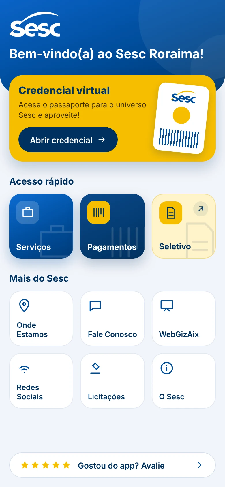
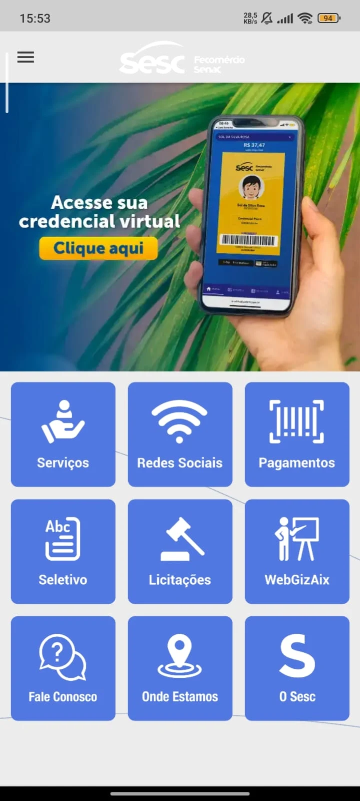

Mais moderna, intuitiva e alinhada às expectativas dos usuários atuais.

Oferecer uma experiência digital mais moderna, intuitiva e alinhada às expectativas dos usuários atuais.
Identidade do Sesc aplicada de forma consistente: um só padrão de cabeçalhos, cartões e espaçamentos em todas as telas.
Acesso rápido ao essencial, com hierarquia clara: o principal se destaca e o restante fica organizado em grupos.
Fluxos curtos e linguagem de app. Sites externos abrem numa moldura única, com voltar, fechar e abrir no navegador.
Fundamentos para futuras evoluções e melhor aproveitamento dos serviços digitais da instituição.

Navegue pelos fluxos do aplicativo, da tela inicial às páginas internas.
Toque em uma tela para ampliar
Ponto de partida: credencial em destaque, três acessos principais e os demais atalhos.
Serviços reúne as áreas do Sesc. Pagamentos orienta o usuário e leva ao site da Credencial Virtual, aberto dentro do app.
Localização e canais de contato, com ações diretas: abrir mapa, ligar, enviar e-mail ou acessar uma rede social.
Os sites abrem direto, dentro da moldura do app, sem tela intermediária. Seletivo e WebGizAix aparecem como espaço reservado.
Páginas institucionais, com termos de uso, política de privacidade e avaliação do app. Os textos são de exemplo.
Sesc Roraima · Redesign do aplicativo